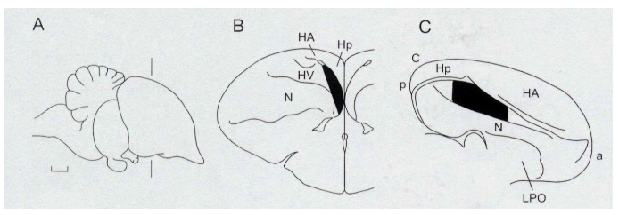
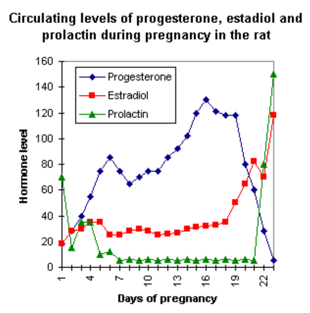
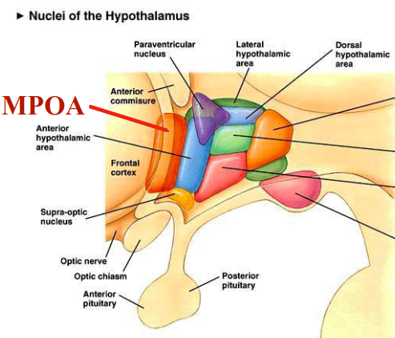

Parental Care and Attachment
How early social experience shapes the developing brain
Contact comfort is a powerful attachment signal
Harlow called the preference for the soft surrogate contact comfort.
The result challenged the idea that attachment is simply a secondary consequence of feeding.

For infant primates, physical contact, warmth, and security are themselves powerful reinforcers.
Imprinting occurs during a sensitive period
Konrad Lorenz originally described imprinting as occurring within a sharply defined critical period and as essentially irreversible.
Later work showed a more flexible picture:
- the effective window can vary with experience
- preferences can sometimes be modified
- natural stimuli often retain privileged status
It is therefore usually more accurate to think of imprinting as learning with a particularly strong sensitive period.

Imprinting changes the developing brain
In domestic chicks, a forebrain region now called the intermediate medial mesopallium (IMM) is strongly involved in visual imprinting.
Learning changes neuronal responses and synaptic properties in this region.
Early attachment-related learning is not merely behavioral: it is accompanied by experience-dependent modification of neural circuits.


Pregnancy prepares the maternal brain
The endocrine state of pregnancy helps prepare the nervous system for the rapid onset of maternal behavior around parturition.
Important signals include:
estradiolprogesteroneprolactinoxytocin
These hormones do not act as a simple on/off switch.
They modify the responsiveness of neural circuits that process offspring-related sensory signals and motivation.


The medial preoptic area coordinates parental behavior
The medial preoptic area (MPOA) of the hypothalamus is a major node in the neural circuitry controlling parental behavior.
The MPOA integrates:
- hormonal state
- sensory signals from offspring
- motivational and reward-related information
Disrupting MPOA function strongly impairs maternal behavior in rodents.

 and then reaches the medial amygdala (`mAMY`). The medial preoptic area (`MPOA`) and bed nucleus of the stria terminalis (`BNST`) integrate these sensory signals with hormonal influences such as prolactin (`PRL`) and estradiol (`E2`). Activity in the MPOA promotes maternal motivation through projections to the ventral tegmental area (`VTA`), which engages the nucleus accumbens (`NA`) and downstream ventral pallidum (`VP`) circuitry. At the same time, MPOA/BNST activity suppresses pup-avoidance pathways involving the anterior hypothalamus/ventromedial hypothalamus (`AH/VMH`) and periaqueductal gray (`PAG`). Maternal behavior therefore emerges from coordinated regulation of sensory processing, motivation, hormonal state, and inhibition of competing avoidance responses.")
Hormones facilitate care, but experience also matters
Virgin female rats do not normally show the same rapid maternal response as females around parturition.
However, repeated exposure to pups can gradually induce maternal behavior even without pregnancy.
This phenomenon is often called maternal sensitization.
Removing olfactory input accelerates the onset of maternal behavior in virgin rats.
 become maternal much more rapidly than animals with intact olfaction, particularly when combined with estradiol benzoate (`EB`) treatment. This indicates that, in virgin rats, pup-related olfactory signals can initially activate avoidance or inhibitory pathways. Reducing olfactory input removes this inhibitory influence and allows maternal responses such as retrieval, nursing, and nest-related behavior to emerge more rapidly.")
High maternal care changes HPA-axis regulation
Offspring receiving relatively high LG/ABN show, on average:
- higher hippocampal
glucocorticoid receptor (GR)expression - stronger glucocorticoid negative feedback
- smaller ACTH and corticosterone responses to acute stress
The effect of early care is therefore not only behavioral: it changes the physiological regulation of the stress response.
 and corticosterone (bottom) before and after an acute stressor in rats reared by mothers showing high or low levels of licking/grooming and arched-back nursing (`LG-ABN`). Offspring receiving high LG-ABN show a smaller and more rapidly declining hormonal response, whereas offspring receiving low LG-ABN show higher and more prolonged ACTH and corticosterone elevations. This indicates that variation in early maternal care can produce long-lasting differences in regulation of the hypothalamic-pituitary-adrenal (`HPA`) stress axis.")